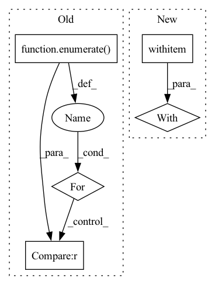

Pattern ID :25323
Before Change
s_per_tick = micros_per_beat / mid.ticks_per_beat / 1e6
for i,tr in enumerate( mid.tracks):
seq = [m for m in tr if m.type=="note_on" and m.velocity]
if len(seq) < min_len:
continue
torch.save(dict(After Change
// files = files[:1000]
with Pool(n_jobs) as pool:
// p.imap_unordered(ft.partial(process, data_path, dest_path), tqdm(files), 32)
for _ in tqdm(pool.imap_unordered(process, zip(files, files_out), 32)):
pass
In pattern: SUPERPATTERN
Frequency: 3
Non-data size: 5
Instances Fragment ID: 77516766
Project Name: intelligent-instruments-lab/iil-python-tools
Commit Name: dbb5cf68b2b6902addf71a598302850beb1473cf
Time: 2022-02-21
Author: victor.shepardson@gmail.com
File Name: scripts/lakh_prep.py
M Class Name: AnonimousClass
N Class Name: AnonimousClass
M Method Name: main(3)
N Method Name: main(3)
M Parent Class:
N Parent Class:
M File Name: scripts/lakh_prep.py
N File Name: scripts/lakh_prep.py
M Start Line: 11
M End Line: 43
N Start Line: 41
N End Line: 56
Before Change
device=self._grad_buffer.device,
)
weights_idx = 0
for idx, mask_diff in enumerate( mask_diffs):
indices = self._unpruned_idxs[idx]
next_idx = weights_idx + indices.numel()
weights_to_prune[weights_idx:next_idx] = (
self._params[idx].data.view(-1)[indices]
* (mask_diff.view(-1)[indices] == -1.0) // newly pruned weights
).to(weights_to_prune.device)
weights_idx = next_idx
After Change
indices = self._unpruned_idxs[idx]
next_idx = weights_idx + indices.numel()
with torch.no_grad():
param.view(-1)[self._unpruned_idxs[idx]] += perturb[
weights_idx:next_idx
].to(param.device)
Fragment ID: 77516762
Project Name: neuralmagic/sparseml
Commit Name: ef782b8597e4b0dbb67283051ca5b325cbee9dd7
Time: 2021-06-11
Author: bfineran@users.noreply.github.com
File Name: src/sparseml/pytorch/optim/mask_pruning_scorer.py
M Class Name: MFACPruningParamsScorer
N Class Name: MFACPruningParamsScorer
M Method Name: mask_update(3)
N Method Name: mask_update(3)
M Parent Class: PruningParamsGradScorer
N Parent Class: PruningParamsScorer
M File Name: src/sparseml/pytorch/optim/mask_pruning_scorer.py
N File Name: src/sparseml/pytorch/optim/mask_pruning_scorer.py
M Start Line: 297
M End Line: 323
N Start Line: 417
N End Line: 434
Before Change
model.train()
for epoch in range(1, num_epochs + 1):
loss_avg = 0
for i , (inputs, labels) in enumerate( tqdm(train_loader, leave=False), start=1):
inputs = inputs.to(device)
labels = labels.to(device)
outputs = model(inputs)
loss = criterion(outputs, labels)
optimizer.zero_grad()
loss.backward()
optimizer.step()
loss_avg += loss.item()
if verbose and i % 100 == 0 :
tqdm.write(
f"Epoch [{epoch}/{num_epochs}], "
f"Batch [{i}/{len(train_loader)}], "After Change
train_loss = run_epoch(model, train_loader, device, criterion, optimizer)
train_loss_history.append(train_loss)
model.eval()
with torch.no_grad():
val_loss = run_epoch(model, val_loader, device, criterion)
val_loss_history.append(val_loss)
if verbose:
tqdm.write( Fragment ID: 77516763
Project Name: jaketae/deep-malware-detection
Commit Name: 745a3e07407c7a3bac0f9828d6c42101d998c3c6
Time: 2020-11-23
Author: jaesungtae@gmail.com
File Name: train.py
M Class Name: AnonimousClass
N Class Name: AnonimousClass
M Method Name: train(9)
N Method Name: train(8)
M Parent Class:
N Parent Class:
M File Name: train.py
N File Name: train.py
M Start Line: 20
M End Line: 53
N Start Line: 16
N End Line: 46